Biology - X
Behind Sensations 71
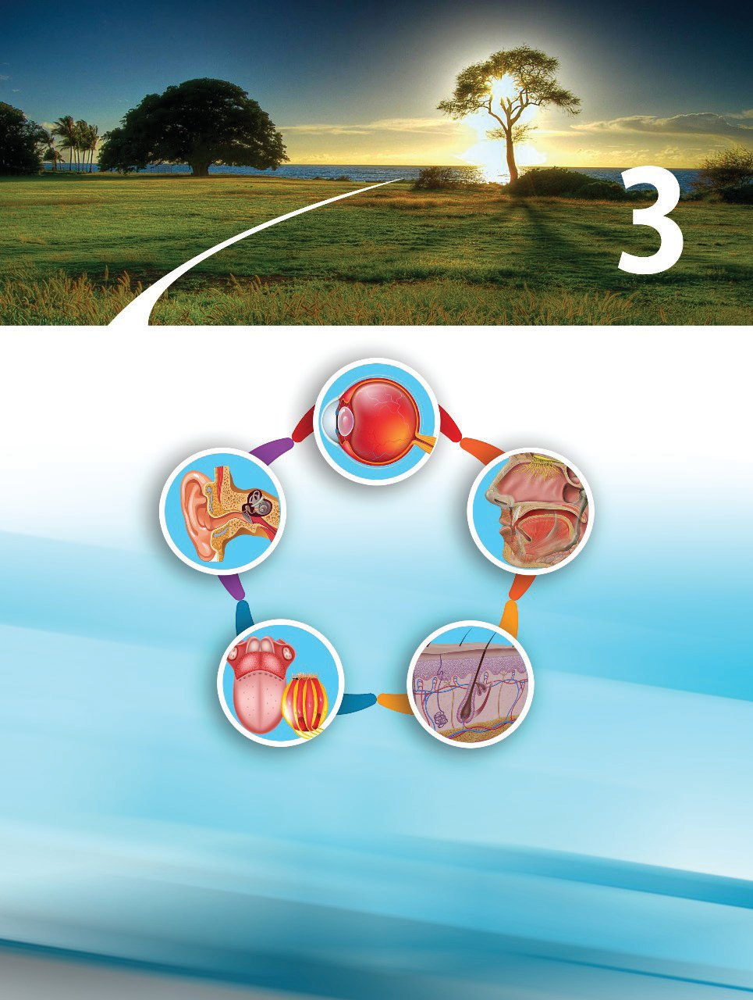
Biology - X
Behind Sensations 71
Biology - X
Didn’t you notice? A group discussion is going on. The topic for discussion is that the body responds in various ways, recognising the changes inside and outside it. Children talk about various responses and the reasons behind them. You can also present some examples. Include them in the given table 3.1. 72
Biology - X
Reasons
Responses
Seeing a friend Covering the ear
Drinking water Table
3.1
Responses and reasons
Haven't you understood that these responses are caused by changes happening in the surroundings. Responses are formed due to various biological and chemical processes that takes place in the body of organisms. There are numerous processes happening behind various responses made when seeing friends. • Light rays from the friends' enter the eyes and the image is formed. • The impulse from the image reaches the brain through the eyes. • The brain analyses this impulse and recognises the friends. • Then, instruction for responses are given to the muscles. • Various responses are formed as a result of muscular activities. Haven’t you understood that we can respond when we see friends because of the combined action of the eyes, the brain and the muscles?
Stimuli and Responses Stimuli are the circumstances that lead to responses in living beings. They can be divided into external stimuli and internal stimuli. Analyse the given hints and draw inferences regarding the diversity of stimuli. 73
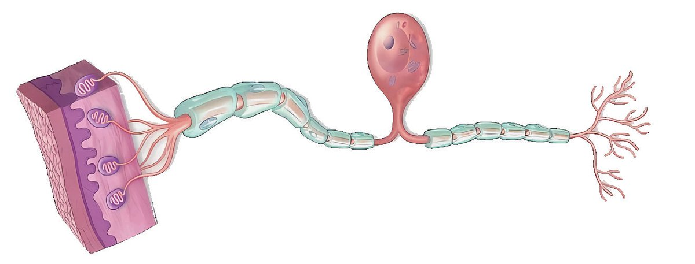
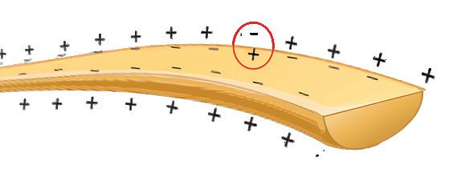
Biology - X
• Takes food, when hungry • A rabbit, upon seeing a lion, gets scared and runs away. • Blanketing to keep out cold • Holding an umbrella to keep out the rain • Body temperature increases during certain diseases How does the body recognise stimuli? Analyse the given illustration 3.1 and description, and make notes.
Receptors and Impulses Stimuli are recognised by the body through specialised cells or nerve endings. They are known as Sensory Receptors. Electrical impulses are produced in receptors in response to external and internal stimuli. These impulses are known as receptor potential. When such impulses are in higher concentration, action potential is formed in the neurons associated with receptors. Action potential travels through neuron as nerve impulses. Action potential in neuron
Receptor potential in the recepters of the skin
Illustration 3.1
Action potential in neuron
Nerve impulses reach the related parts of the brain and form appropriate response instructions. Muscles and glands respond to these instructions accordingly. Haven’t you understood the neural activities behind the ability to respond when you see your friends? 74
Biology - X
Sensory receptors and Senses Senses that can be recognised through receptors are divided into two types: general senses and special senses. The receptors in skin, muscles, joints, internal organs and blood vessels help to detect general senses such as touch, pain, heat, pressure etc. But the receptors concentrated only in certain organs help to recognise specific senses such as vision, hearing, taste and smell, etc. Discuss the receptors found in the sense organs that help to identify special senses and the stimuli they detect and complete the table 3.2.
Sense organs
Receptors
Eye
Photoreceptors
Stimulus
Sound Chemoreceptors Touch receptors .................... Smell Table
3.2
Sense organs, receptors and stimuli
Haven’t you understood the receptors for identifying the special senses and their characteristics? The tongue can detect taste, but the ears can’t. What could be the reason? Discuss and find the answer to the question based on the understanding gained from the distribution of receptors. Let us understand how special senses are recognised.
75
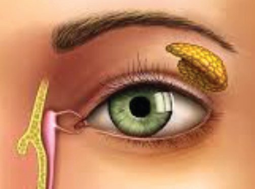
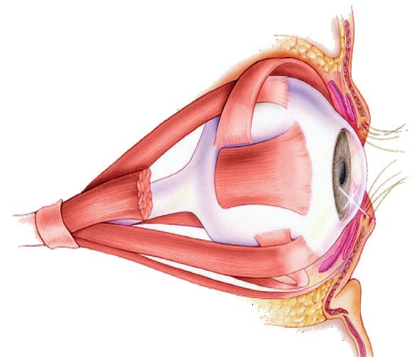
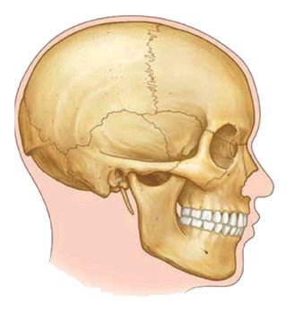
Biology - X
Eye The eye is an important sense organ that provides perception about the external world. Analyse the illustration 3.2, and its description based on the indicators and prepare notes about the position and parts related to the eye. Eye muscles
Eyelid
Eye socket Eye lashes
Illustration 3.2
Anterior part of the eye
Lacrimal gland
Conjunctiva Conjunctiva is the membrane that covers the anterior part of the eye, including the eyelids except the cornea. Its functions are to protect the eye, keep it moist and lubricated, and prevent dust, germs and other particles from entering the eye. Lacrimal glands Tears are produced by the lacrimal glands. These glands are present in the eyelids towards the upper part. Tears are essential for keeping the surface of the eye moist, providing nutrients and eliminating waste materials. The enzymes called lysozyme present in tears help to protect from infections.
Indicators • Position of the eye • Function of eye muscles • Importance of the eyelid, eyelashes, etc. • Importance of conjunctiva, tears 76
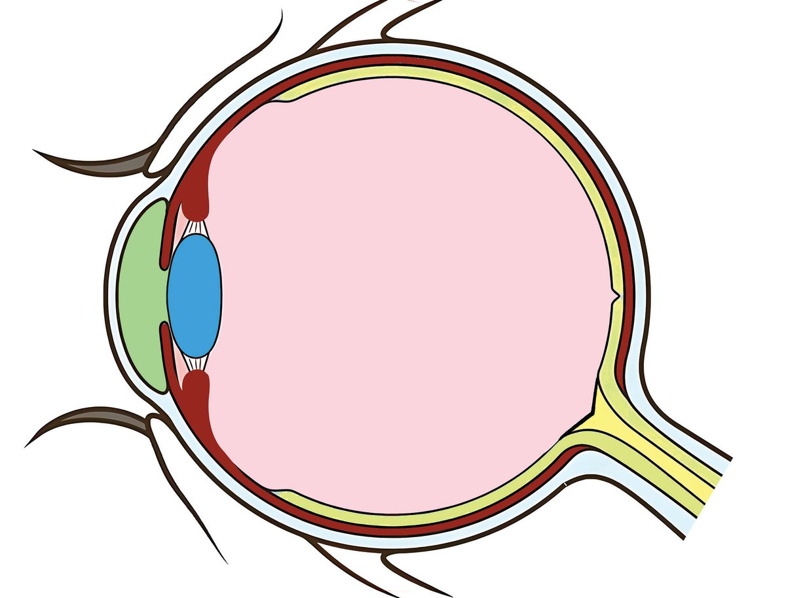
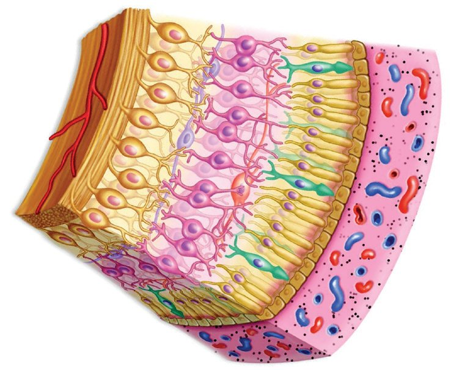
Biology - X
Layers of the Eye and Associated Parts What are the major parts of the eye? Analyse the figure 3.1, table 3.3 and identify the peculiarities of each layer, associated parts and prepare notes.
Sclera Ciliary muscles
Choroid
Cornea
Retina Yellow spot (macula)
Iris Pupil
Lens
Aqueous chamber Vitreous chamber Blind spot
Ganglion cell layer Bipolar cell layer Photoreceptor layer (Rods, Cones)
Figure
3.1
Major parts of the eye
77
Section of the retina
Optic nerve
Biology - X
Layers of the eye
Associated parts
Sclera (outer layer) provides firmness Cornea and protection to the eye Choroid (middle layer) Provides oxygen and nutrients to the inner layer of retina and regulates temperature
Retina (inner layer) Contains photoreceptor cells. The image is formed.
Table
The bipolar cell layer consists of two types of cells, namely on bipolar cells and off bipolar cells. Flowchart
3.1
Layers of the eye and its function
Characteristics and function The transparent anterior part of the eye Allows light to enter the eye.
Ciliary muscles
Adjusts the curvature of the lens
Iris
Two types of muscles in the iris regulate the size of the pupil depending on the intensity of light. Iris contains the pigment called melanin. Melanin gives the iris its characteristic colour as well as absorbs ultraviolet rays. Regulates the amount of light.
Convex lens
Forms a small, real and inverted image of the object on the retina.
Layer of photoreceptors
The photoreceptor cells called rod cells recognise objects in both dim light and in shades of black and white. The cone cells provide vision in intense light and also help in recognising colours.
Bipolar cell layer
Transmits impulses from the photoreceptors to ganglion cells.
Ganglion cell layer
Transmits impulses from bipolar cells to the optic nerve.
3.3
The layers of the eye - Characteristics and Functions
Complete the given flowchart 3.1 by including the layers of the eye and their functions.
Layers of the eye
...............................
...............................
...............................
...............................
...............................
Image is formed
78
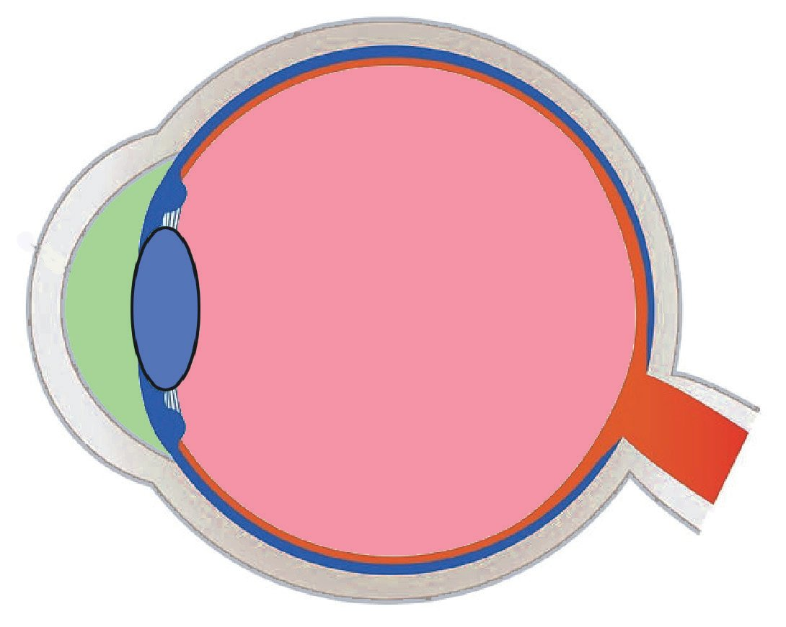

Biology - X
Aqueous humor
Vitreous humor
Figure
3.2
Fluids in the eye
Haven’t you noticed the fluids indicated in the figure 3.2? What is their significance? Analyse the given description and identify the function of the fluids present in the eye.
Eye chambers and Humors The eye has two chambers. The aqueous chamber is seen between the cornea and lens. The watery aqueous humor is present here. It oozes out from the blood like tissue fluid and is reabsorbed into the blood . This is how the pressure in aqueous chamber is regulated. Lens and cornea get oxygen and nutrients from this fluid. The vitreous chamber lies in between the lens and the retina. The transparent jelly like vitreous humor present there maintains the shape of the eyeball. Make a table by comparing the aqueous humor with the vitreous humor. Complete the flowchart 3.2 including the parts involved in the path of the light rays that pass through the eye.
79
There are no photoreceptor cells in the retina where the optic nerve originates. This part having no vision is known as the blind spot. The yellow spot (macula) is seen in the middle of the retina where cone cells are abundant.
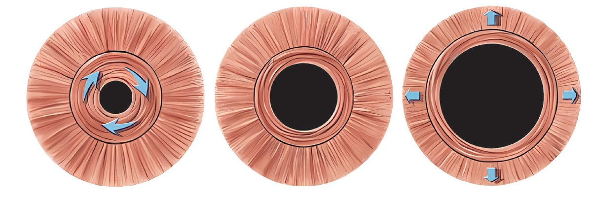
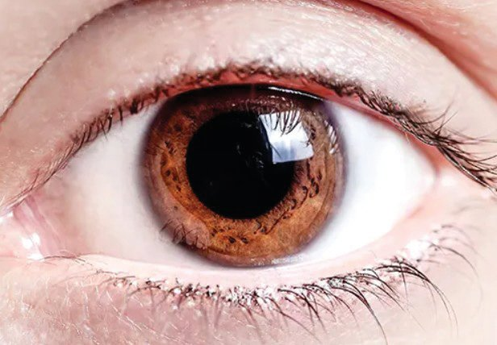
Biology - X
Cornea
.........................
Retina
Vitreous humor
Flowchart 3.2
Pupil
.........................
The path of light through the eye
Iris is the part seen behind the cornea. The pupil is the aperture seen at the centre of the iris. The normal size of the pupil is from 2 to 3 mm. When the size of the pupil increases, it becomes possible to direct 16 times more light on to the retina than normal. Pupil
In which situations are the size of the pupil changed? How does it become possible? Analyse the illustration 3.3 and description that denotes the muscular activities of the pupil based on the indicators, and prepare notes. The size of the pupil is regulated by the radial muscles and circular muscles seen in the iris. The size of the pupil has to be regulated in order to see the objects clearly in dim light and to prevent damage to the retina in intense light. Circular muslces contracts
Radial muscle Contracts
Intense light
Normal light
Illustration 3.3
Muscular activity in the pupil
Dim light
Indicators • Muscles associated with the pupil • Muscular activity and difference in the size of the pupil 80
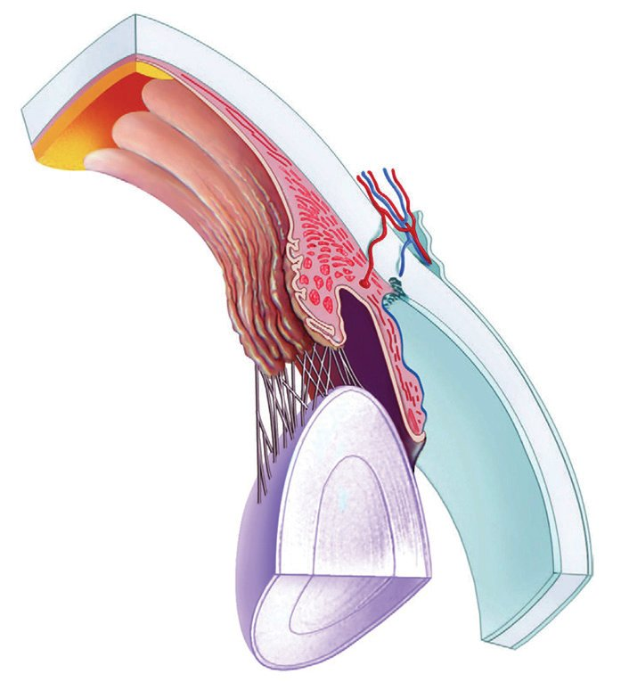
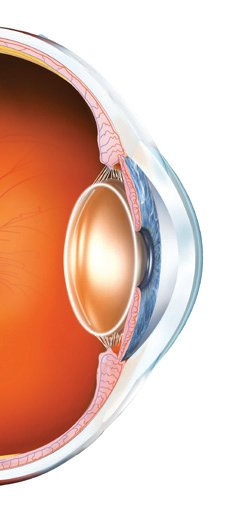
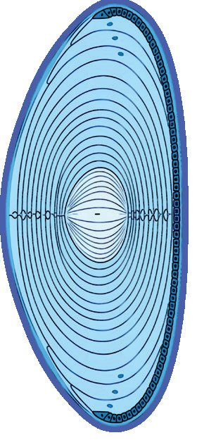
Biology - X
The lens has three main parts. They are an elastic membrane called the capsule, within which are the lens fibres and the epithelium, which is located solely in the anterior part, between the lens fibres and the capsule. It is the epithelium that continuously produces lens fibres throughout an individual's lifetime. The main structural component of the lens is a protein called crystallin. The lens derives nutrients from the aqueous humour. Age-related changes affect the flexibility and transparency of the lens as well as vision.. Redraw the figure of lens and label the parts capsule and lens fibres. Ciliary muscles Cornea
Ligaments
Figure
3.3
Eye lens and ligaments
Lens
From Figure 3.3, it can be understood that lens got attached to the ciliary muscles through ligaments. What is the importance of this arrangement? Discuss and record your inferences. .................................................................................................... Analyse the given description, illustration 3.4 and record your inferences. The ability of the eye to foucs images of both near and distant objects accurately on the retina is called the power of accommodation. This is achieved by changing curvature of the lens, by the actions of the ciliary muscles. 81
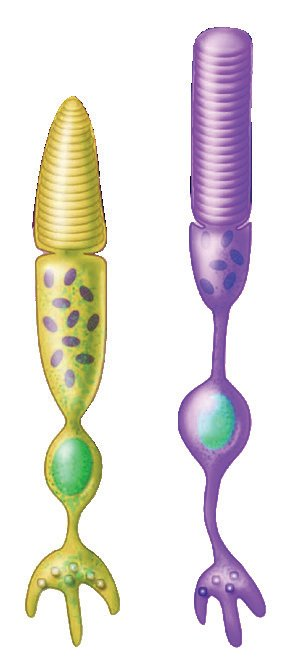
Biology - X
Notice the arrangement of the lens, ciliary muscles and ligaments while viewing distant objects as given in illustration 3.4 Discuss the change in the activities of these parts of the eye while viewing near objects and complete the illustration 3.4. Ciliary muscles are relaxed
Lens
Ligaments are stretched
While viewing a distant object
Illustration 3.4
While viewing a near object
Change in the curvature of the lens
Can we see the object as soon as the image is formed on the retina? Analyse the given description based on indicators and record your inference.
Retina
Rod cells
Cone cells
Figure
3.4
Photoreceptors
You have understood that the rod cells and the cone cells are the photoreceptors. Rod cells are cylindrical and cone cells are cone shaped (Fig.3.4). Rod cells are about more than 9 crores in number and cone cells are about 45 lakhs. Rod cells contain the pigment called rhodopsin and in cone cells is photopsin. The components of both pigments include a protein namely opsin and retinal, formed from Vitamin A. However, the chemical structure of retinal is different in rhodopsin and photopsin. 82
Biology - X
Indicators Photoreceptors – Shape, number Photoreceptors – Pigments and its components What are the changes to the photoreceptors in the presence and absence of light? How does this make vision possible? Analyse the given flowchart 3.3, gain an understanding and prepare a note.
What is the importance of pigments in photoreceptors? Find out.
Photoreceptors to the brain Glutamate acts as the primary neurotransmitter in photoreceptors. Variations in glutamate production are responsible for the perception of darkness and light.
In the dark, photoreceptors continuously produce glutamate.
In the presence of light, photorecptors do not produce glutamate.
On bipolar cells (those that sense light) are inactivated and off bipolar cells (those that sense darkness) are activated.
On bipolar cells become active and off bipolar cells become inactive.
Off bipolar cells that indicate the absence of light form impulses that reach the brain through the optic nerve, creating a sense of darkness.
On bipolar cells that indicate the presence of light form impulses that reach the brain through the optic nerve, creating a sense of vision.
Flowchart
3.3
Photoreceptors and Vision
83
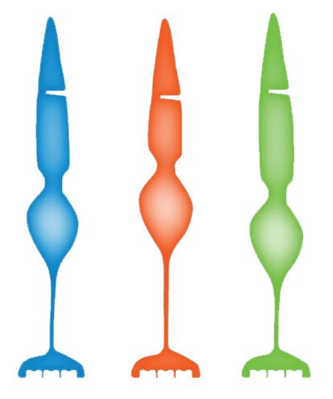
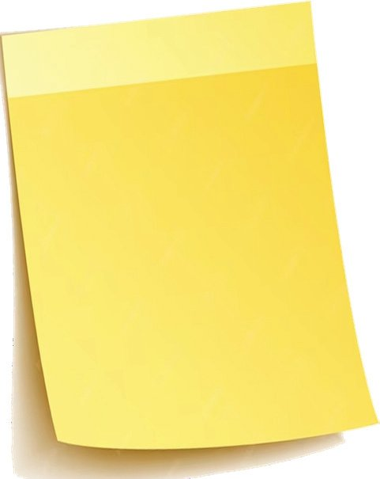

Biology - X
Indicators • Stimulation of photoreceptor cells • Synthesis of glutamate and bipolar cells • Ganglion cells and impulses Haven’t you understood the functions of rod cells and cone cells? How do cone cells help in recognising colours? Analyse the description given below and gain an understanding as to what the basis of colour vision is.
Colour vision
Is retina y to necessar see black colour? . Find out
In the retina, there are three types of cone cells recognise primary colours. S - cones show better sensitivity at short wavelengths (blue light), M - cones at medium wavelengths (green light) and L - cones at longer wavelengths (red light). Colour vision is made possible when the three types of cones get stimulated in varying proportions when exposed to coloured light depending upon the intensity and wavelength of light. When red and green cones are stimulated together, the perception of yellow colour is formed. The stimulation of all the three types of cones creates the sensation of white light.
The gene responsible for the production of pigments in cone cells which are sensitive to green and red are found in the X chromosome. The gene which is responsible for the production of blue cone pigment is found in chromosome 7. Can you find out the reason for colour blindness? Based on the indicators, collect more information and prepare a note.
84
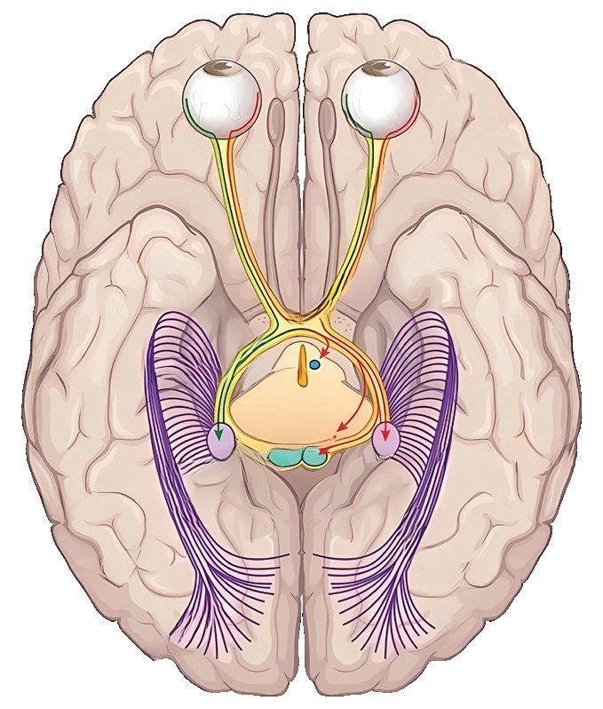
Biology - X
Indicators • Why are men more affected by colour blindness? • The possibility of colour blindness in women • The mode of inheritance of colour blindness Impulses related to the image formed in both eyes reach the visual centre of the brain through the optic nerve. Why don’t we see objects as two, even though images are formed in both eyes? Analyse the given illustration 3.5 and description and record your inferences. Since each eye receives light from different angles, there will be two slightly different images on the retina. These two images are sent to the visual cortex in the brain. The brain compares these images and combines them(fusion). This process is known as binocular fusion. This will help to determine the difference between the two images. Thus, we get 3D vision. It enables to understand how distant or near objects are, and also to perceive depth.
• Short-sightedness • 85
Optic chiasma
Vision centre in the brain
Illustration 3.5
If eye disorders or diseases are not prevented or treated in time, vision can become impaired. Which are the eye diseases/disorders? List out, what you know:
Optic nerves
Binocular fusion
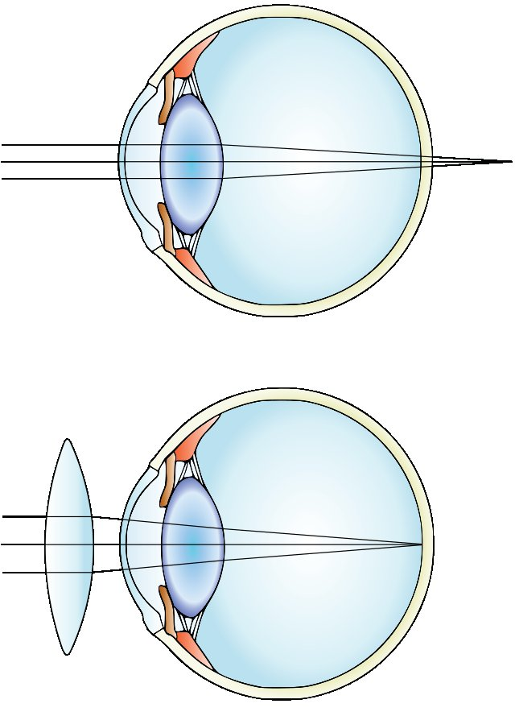
Biology - X
Analyse the causes and treatments of eye diseases and disorders given in the table. Complete the table 3.4 through discussion and conduct an awareness class on the ways to prevent diseases. Organise an eye testing camp under the auspices of the Health Club. Eye diseases / disorders Shortsightedness
Reason
Treatment
Enlarged eyeball
Spectacles with concave lens or contact lens surgery
Longsightedness Astigmatism
Longsightedness and rectification
Cylindrical lens
Cataract
Eye lens becomes opaque
Glaucoma
Failure in the reabsorption of aqueous humor, pressure increases and the optic nerve gets damaged
Conjunctivitis
Infection in the conjunctiva
Diabetic retinopathy
Uncontrolled diabetes
Night blindness
Deficiency of vitamin A
Due to prolonged deficiency of Xerophthalmia Vitamin A, cornea becomes opaque Table
3.4
Eye diseases / disorders
Vision problems can affect daily activities and the quality of life. Proper eye tests help in early detection of eye related problems. Analyse the given description and gain an understanding on the importance of eye care. 86
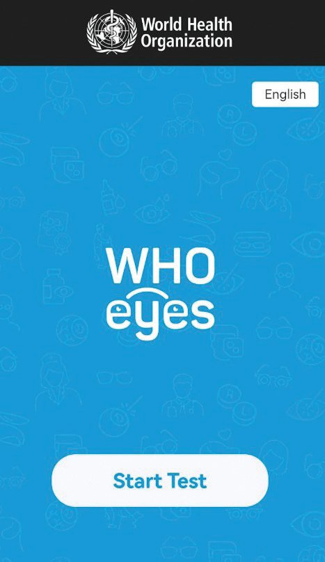
Biology - X
World Sight Day is observed on the second Thursday of October. The World Health Organisation (WHO) and the International Agency for the Prevention of Blindness (IAPB) call for the observance of this day to raise awareness on the eye healthcare. This also includes reducing screen time and encouraging regular eye tests to care for children’s vision. WHO eyes, a free application available in 14 languages enables free eye test for ages 8 and above. Some vision problems can be corrected with less expensive methods such as spectacles and cataract surgery. The message for World Sight Day 2024 is ‘Children, love your eyes’. Plan activities that can be organised at the school level and in the society on the World Sight Day this year.
Protection of the eye Expand the list given below by discussing ways that can be implemented to protect the eye from various disorders and diseases.
• Wash the eyes frequently, with clean water. • Eat food rich in Vitamin A. • • • 87

Biology - X
Haven’t you heard that donating the eye is a noble act? Donating eyes can give vision to two blind people. Cornea gets surgically transplanted. It is beneficial for those who have lost their vision due to the damage of the cornea. Each one of us has a responsibility to adopt a careful life style to care for the eyes and to develop a positive attitude towards eye donation.
Children below the age of five should spend only an hour or less on digital devices. Those who are below one year should not use such devices. -World Health Organisation (WHO)
Didn’t you notice the news report? Do only children need instructions? Shouldn’t there be a discussion about the teenager’s screen time? Complete the project work by gathering additional information and findings based upon the indicators given on this topic.
Indicators • Recommended screen time • Physical and mental health, and consequences • Sleep • Personal relationships • Social relationships • • Organise an interview with specialists in the field of ophthalmology to clarify doubts related to this topic. 88
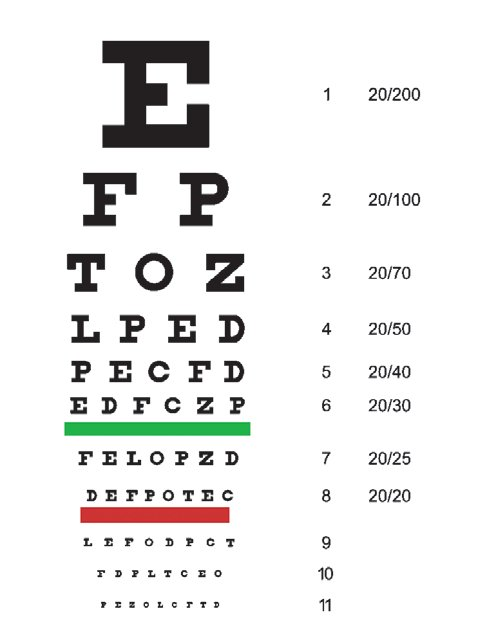
Biology - X
There are several charts used to test visual acuity. Among them, the commonly used one is Snellen Chart. It consists of rows of letters or symbols that decrease in size from top to bottom. In the test, the person stands twenty feet away and reads the smallest line that can be clearly seen with one eye. The results are recorded as a fraction. This simple but effective test is an important part of routine eye test. There are many such charts in use that include letters and symbols. In addition to this, many modern devices are used for eye test. Examples include Retinoscopes, Tonometers and Ishihara plates. Find out how these devices are used in eye tests and then prepare a science article related to this, for presentation.
the What do r and numerato tor of the a n i m o n e d n an eye fraction i using test result hart Snellen c indicate? Find out.
Ophthalmology and career opportunities Ophthalmology is a specialised branch of medicine that deals with the diagnosis, treatment and prevention of eye diseases and disorders. An opthalmologist is a medical doctor trained to provide comprehensive eye care including surgery. This career path begins with an MBBS degree. Further, a graduate or post graduate degree (MD/MS) or diploma in ophthalmology should be obtained. Ophthalmic assistants are those who perform eye examinations along with opthalmologists. They correct lenses, detect early signs of eye diseases and assist in patient care. There are also many opportunities in the field of optical dispensary providing eye glasses and contact lenses. The growing demand for eye care has opened up new avenues for retina specialists, paediatric ophthalmologists and occular oncologists. There are many job opportunities in fields like vision therapy, occular imaging and AI diagnostics. There are many self employment opportunities also. To enter and excel in these fields, one must select suitable courses and acquire necessary clinical and technical skills. 89
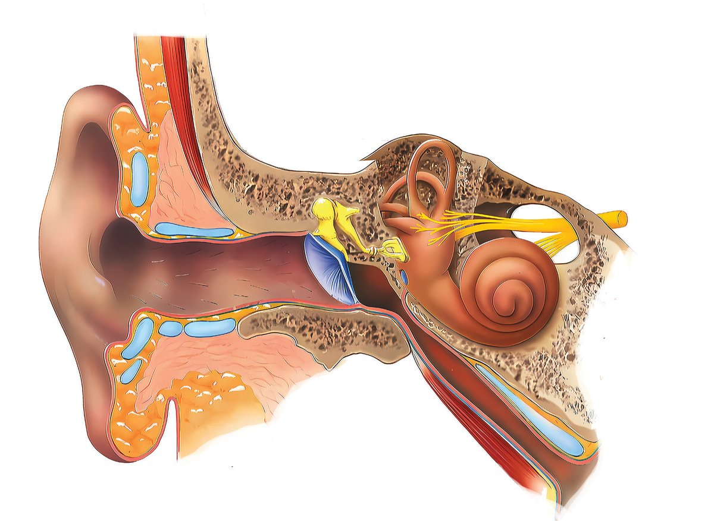
Biology - X
Hearing You may know that just like vision, hearing is also a sensation. Hearing is the combined experience of the ears and the brain. The sense of hearing also leads to responses. The human ear also plays a major role in maintaining the balance of the body. Observe illustration 3.6, identify the main parts of the ear and their associated parts, and complete the given table 3.5. Outer ear
Middle ear
Inner ear Ear oscicles Vestibular nerve Auditory nerve
Cochlea Auditory canal
Vestibule Tympanum
Pinna
Eustachian canal
Illustration 3.6
Structure of the ear
Main parts of the ear
Associated parts
Outer ear
Table
3.5
Structure of the ear
90
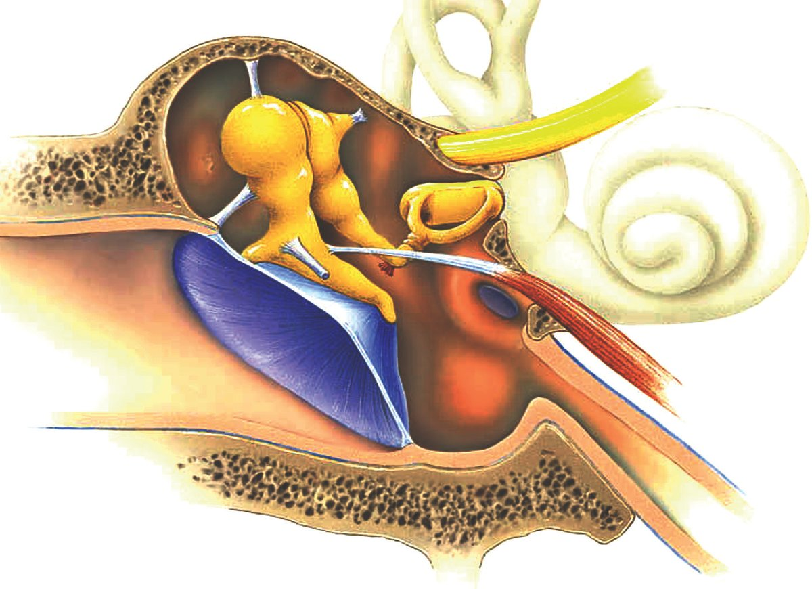
Biology - X
Notice the functions of the pinna listed below. • Directs the sound waves into the auditory canal • Helps to identify the direction from which sound is produced. • Protects the auditory canal to some extent from foreign particles. What are the peculiarities of the auditory canal? It directs sound waves to the tympanum and protects the tympanum from foreign particles. The hair inside the auditory canal, earwax and sebum secreted by glands in its wall help to prevent dust and germs from entering the ear. Like tears, ear wax also has disinfectant properties. Tympanum or eardrum is 9-10 mm in diameter and has only 0.1 mm thickness. In the middle ear, the ear ossicles are arranged in connection with tympanum. Analyse the illustration 3.7, description, gain an understanding and prepare notes.
Malleus
Incus
Stapes
Eardrum
The tympanum vibrates in accordance with the sound waves. These vibrations make the bones in the ear ossicles vibrate as well. Eustachian canal
Illustration 3.7
Parts of the middle ear
91
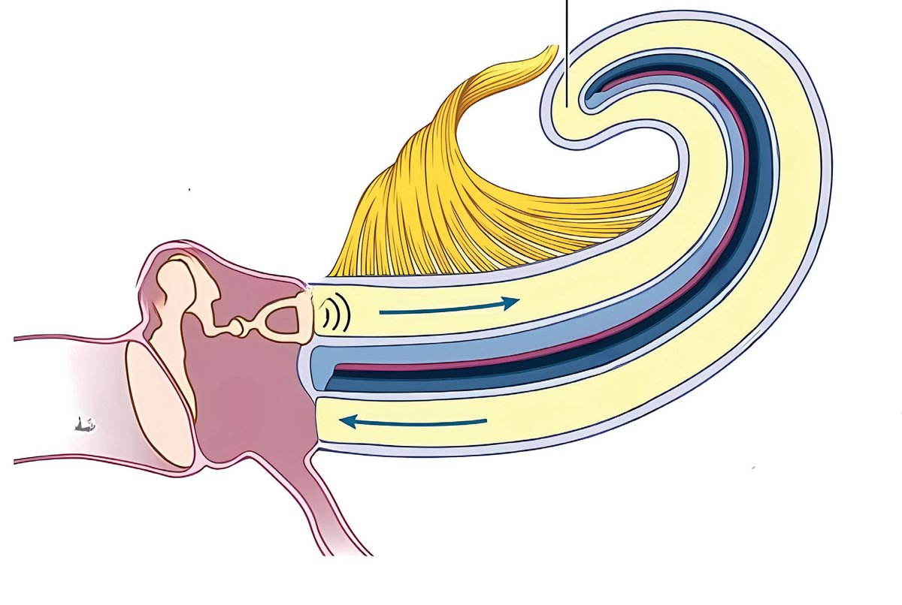
Biology - X
Eustachian canal The eustachian canal is a long tube that is 4 cm long that connects the middle ear to the pharynx. Normally it is closed, but it opens during chewing, blowing the nose etc. It helps to balance the pressure on both sides (middle ear and the atmospheric air in the outer ear) of the tympanum. It also facilitates the flow of mucus and fluids from middle ear to the pharynx. Where are the vibrations that reach the stapes directed? What are the mechanisms of the inner ear that help hearing? Analyse the given illustration 3.8 and the description Now, complete the flowchart 3.4 that indicates the direction of sound waves and the sense of hearing. Tip of the cochlea
Middle chamber
Oval window Upper chamber
Lower chamber Cochlea Perilymph Basilar membrane Round window
Illustration 3.8
Endolymph Organ of Corti
The Inner ear (Cochlea - hearing)
92
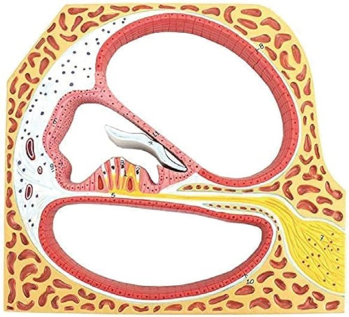
Biology - X Upper chamber
The sense of hearing Sound waves vibrate the tympanum. From there the vibration passes through the ear ossicles and then vibrates the oval window. The structure of the oval window is also similar to that of the tympanum. The cochlea, having the shape of a snail shell, has three chambers. oval window is the membrane that covers the opening towards the upper chamber. The upper and lower chambers are filled with a fluid called perilymph. The middle chamber is filled with endolymph. The Organ of Corti where the auditory receptors are present is situated in the basilar membrane between middle and lower chambers. The vibrations that reach the hair cells present here generate impulses. These impulses reach the brain through auditory nerve resulting in the sense of hearing. Pinna
.......................
Basilar membrane Ogan of Corti
Flowchart
3.4
........................... ......................
Lower chamber
Organ of Corti
Figure
3.5
Organ of corti Malleus
.......................
Oval window
.......................
Impulses in the optic nerve
.......................
Behind the sense of hearing
You have understood the main parts and functions involved in the process of hearing. Expand and complete the table 3.6 by adding the parts that help in hearing.Include their functions also. Part
Function
Pinna Tympanum
Table
3.6
Parts that help in hearing and functions
93
s e happen e r t g i b A rooted in to get up t. Was the fores nd if no u o s a e r the there to one was hear it? . Find out
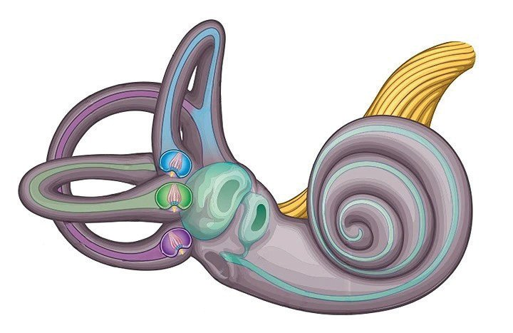

Biology - X
Another function of the ear is to maintain body balance, isn’t it? Which part of the brain is responsible for maintaining balance? How are the impulses for maintaining balance transmitted to that part? Analyse the given illustration 3.9, and its description based on the indicators and find out the role of the ear in maintaining balance. Prepare a flow chart on it. Utricle Semi circular canals
Vestibule
Saccule Vestibular nerve
Hair cells
Illustration 3.9
The Inner ear - Maintaining Body Balance
The part of the inner ear that maintains body balance is the vestibular system, which includes three semicircular canals. vestibule and hair cells. The endolymph present in the canals, which are arranged perpendicular to each other, moves with the rotational movement of the head. As a result of this movement, the hair cells present here get stimulated and impulses are formed. The utricle and saccule of the chamber called the vestibule also contain hair cells. The linear movement of the head generates impulses in these hair cells. When the impulses reach the brain through the vestibular nerve, the brain maintains body balance by receiving impulses from the eyes and muscles as well..
Indicators • • • • •
The parts of inner ear associated with balance Position of the hair cells Fluid in the chambers The situation in which hair cells are stimulated The part of the brain associated with balance 94
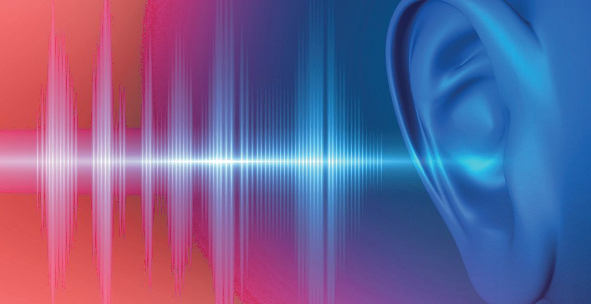

Biology - X
Hearing impairments occur due to many reasons. Depending upon the causes, there are also remedies including surgery. Hearing aids are also available. An excerpt from a science article related to hearing is given below. Analyse it, discuss the ways to prevent hearing impairments and organise awareness programmes.
Hearing is a divine gift that nature has bestowed on humans. Sound that travels in the form of waves can be transmitted only through a medium. A sound that can be heard in a condition of complete silence is represented as zero decibel. For every 10 decibels, the intensity of the sound increases tenfold. In a normal conversation, intensity of the sound will be between 40 and 50 decibels. It can be up to 60 decibels, while speaking loudly. The normal sound of the honking of a car horn is 70 decibels, while that of an air horn is 100-110 decibels. Intensity of noise above 80 decibels is extremely annoying. Noise pollution is a danger that is most harmful and unfortunately, the most neglected of all the environment pollutions that we face today. Hearing of loud noise (above 85 decibel) for a short time and less noise with a lesser intensity (below 55 decibel) for a very very long time can cause permanent hearing impairment.
95
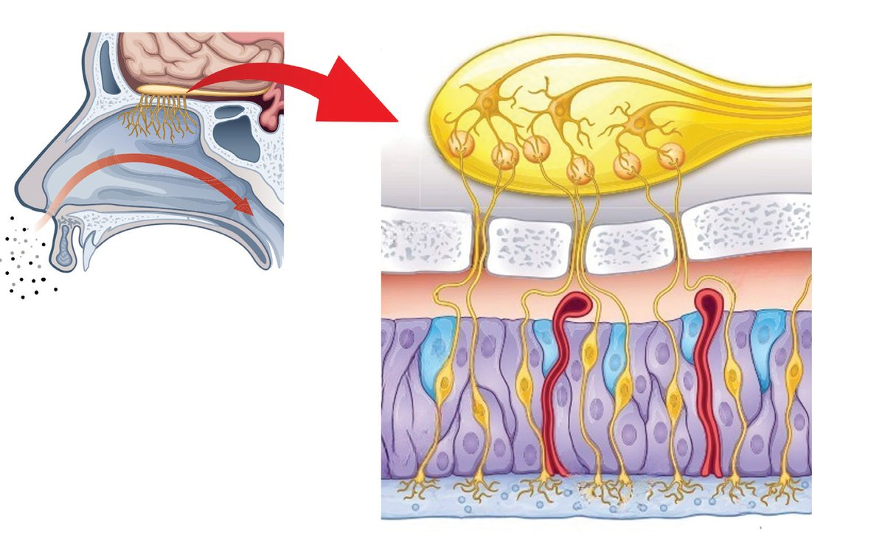
Biology - X
Olfaction
You have understood how the eyes and ears help to perceive senses. The tongue and nose are two interconnected sense organs. What are the structural features of these organs to detect taste and smell respectively? Analyse the given illustration 3.10 and its description. Complete the flowchart 3.5 related to the process of sensing smell. Group of olfactory nerves
Impulses
Olfactory particles
Mucus membrane secretes mucus Olfactory receptor neurons
Illustration 3.10 Olfactory receptors
While breathing, the particles responsible for smell enter the nasal cavity. Then it gets dissolved in the mucus produced by mucus membrane. Millions of olfactory neurons in the mucus membrane get stimulated by special olfactory particles. Receptors generate impulses, and they travel through the olfactory nerve to reach the part of the brain recognising smell, and the sense of smell is effected. Mucus membrane
Olfactory receptor
Olfactory nerve
Olfactory molecule
Flowchart
3.5
Sense of smell
96
Brain
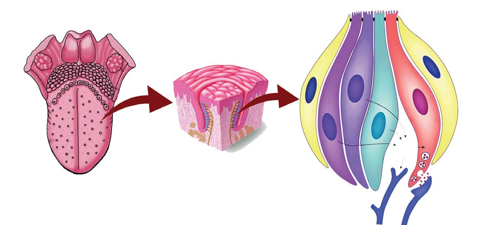
Biology - X
Taste
One can identify the smell of the food even before tasting it. Taste buds play a crucial role in enjoing the food by helping us to perceive the natural flavours of food. Food made with natural ingredients is safe and healthy rather than the taste of artificial additives or harmful substances. Analyse the illustration 3.11 indicating the activities of the sense of taste and its description based on the indicators. Record inferences. Chemoreceptors
Neuron Tongue
Papilla
Taste bud
Illustration 3.11 Taste buds and chemoreceptors
A taste bud will have about 100 chemoreceptors. Microvilli from each chemoreceptor, reach the minute pores present in the papilla. Saliva enters through this pore. Substances that give rise to taste are dissolved in saliva and stimulate chemoreceptors. The impulses produced by these molecules in the chemoreceptors reach the brain through the nerve and make the sense of taste. The main tastes we recognise are sweet, sour, salty, pungent, bitter and umami.
Indicators • Papilla in the tongue • Position of taste buds • Chemoreceptors and taste • Saliva and the sense of taste Haven’t you understood the processes behind smell and taste? Complete the given table 3.7 suitably. 97
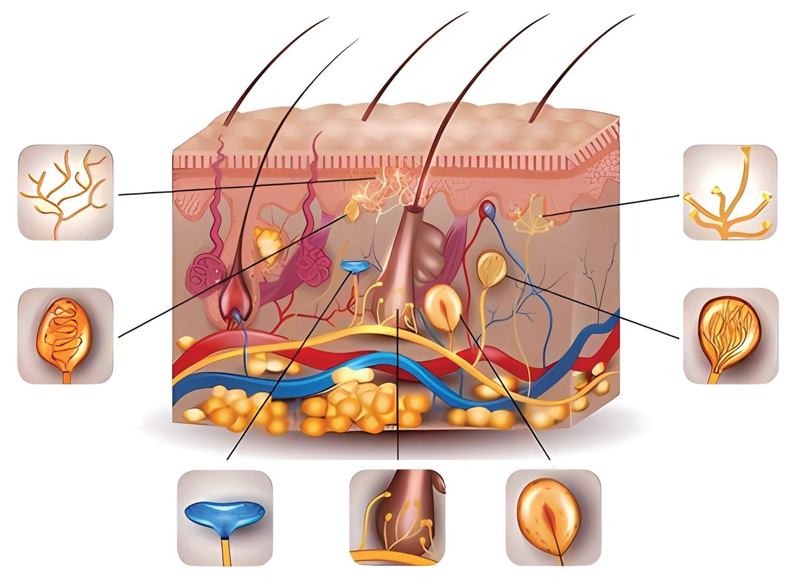
Biology - X
Process
Smell
Taste
The fluid in which substances dissolve Stimulated receptor The nerve that carries impulses to the brain Table
3.7
Receptors and experiences
Skin Which are the senses that can be perceived through the skin? Are all the receptors which help this the same? Analyse the illustration 3.12 and gain an understanding of the position and function of the receptors.
1
2
Pain, temperature fluctuations
Touch, pressure and movement of hairs
3
4
Cold, touch
Shape, quantity and structure of objects
5
Intense touch, pressure, heat
6
7
Helps to find out the movement of hair
Vibration, touch with high frequency
Illustration 3.12 Receptors in the skin
98

Biology - X
Receptors in the skin Receptor
Function
1. Independent nerve endings Pain, temperature fluctuations 2. Merkel disc
Touch, pressure and movement of hair
3. Meissner corpuscles
Shape, quantity and structure of objects
4. Krause end bulbs
Cold, touch
5. Rufini end organ
Intense touch, pressure, heat
6. Root hair plexus
Helps to find out the movement of hair
7. Pacinian corpuscles
Vibration, touch with a high frequency Pain
Pain is the response that alerts the body to dangers such as injury, wound, infection and that of such kind. The process of identifying pain is known as nociception. Specialised receptors called nocireceptors are nerve endings found throughout skin, muscles and internal organs. The pain experienced while touching a hot vessel is called nociceptive pain. Here, a sensory neuron or nociceptor, transmits impulses to the spinal nerve and then to the brain. Then pain is experienced. Due to an infection or tissue damage, the body produces molecules such as cytokines and chemokines. These also lead to pain. Pain can also be experienced in conditions such as neuropathy, where peripheral nerve damage occurs.
Analyse the illustration 3.13 and gain an understanding of the diverse sensory mechanisms found in different organisms. It will help to understand the world around. Modify the illustration by gathering more information. Prepare a wall magazine and display it in your class.
99
Biology - X
Amoeba/Bacteria
Euglena
Insects
Detects the presence of chemicals in the surroundings and move against them
The eyespot (stigma) helps to detect light and move towards it.
The compound eye made up of Ommatidia. The Antenna helps to detect smell and touch.
Bat
Hawk
Snake
Ears and special type of echo location organ helps in hunting and travelling.
Eyes with high vision, systems for long distance vision and detecting ultra violet radiation.
Jacobson’s organ helps to detect smell.
Dog
Highly sensitive olfactory receptors (300 million) are found. Sensory diversity in organisms Illustration 3.13 Sensory diversity in organisms
Among mammals, elephants have the largest number of olfactory genes, about 2000 genes. It is only 400 in human beings. Elephants mainly depend on smell for food, not vision. They can detect the presence of water even from a distance of 19 km using the trunk. They can sense the vibration from the ground
100
Biology - X
Human senses are the powerful tools that connect us to the world around us. They help us to understand, interact and respond with acute awareness. We collect information that form our thoughts, emotions and actions through vision, hearing, smell, taste and touch. Our nervous system equips the body for survival and adaptation through quick and suitable response to these sensations. As humans, our ability to interpret and respond to sensory information reflects the complexity of life. Beyond survival, our senses contribute to the richness and beauty of human experience ranging from relishing art and music to forming relationships. Understanding and caring of our senses ensure a healthy and satisfactory life. This enables us to continue our exploration of what remains still uncovered. Similarly, sensation and perception also happen in the internal environment. Thirst is experienced when the level of water decreases in the internal environment. The receptors, nerves and brain are involved in this. The receptors in the internal environment need not be transformed the nerve cells. We shall study these in detail, in the next chapter.
101

Biology - X
Let us Assess 1.
Which of the following statements is correct? a.
Each taste bud has different chemoreceptors.
b.
Opsin in rhodopsin contains retinal which is formed from vitamin A.
c.
Photoreceptors are formed from optic nerve.
d. Both rhodopsin and photopsin contain retinal. 2.
3.
Recreate the illustration as given below by including any sense organ.
impulse
nerve
stimulate
stimulus
receptors
centre in the brain sensation
Listen to the conversation between two children. Evaluate it and record your opinion. Child 1 - We should be proud of being born as humans. Humans have
the most developed and efficient brain and sense organs.
Child 2 - It is enough to talk about the brain, as the sense organs are its
continuation.
4.
Analyse the information given in the columns A,B,C. If inter connected information is present in three columns. Rearrange them suitably. A
B
C
Cochlea
Pharynx
Oval window
Tympanum
Perilymph
Cerebellum
Vestibule receptors
Organ of Corti
Endolymph
Eustachian Tube
Nerve fibres
Auditory receptors
Outer ear
Ear ossicles
Hypothalamus
102
Biology - X
5.
Correct the mistake, if any. Impulses are formed in the retina due to the dissociation of rod cells.
6.
Analyse the given word pairs below, and find the relationship between them. Retinal- Night blindness Umami- Taste buds Cone cells- Colour Blindness
7.
Classify the given activities based on the indicators. •
The image of your friend formed in the retina
•
Looking at the friend and smiling
•
The impulses of the image formed on the retina is sent to the brain.
•
Photoreceptors are stimulated
Indicators
8.
9.
•
Activity/activities related to sensory nerve fibres
•
Activity/activities related to motor nerve fibres
•
The activities not related to the above ones
Which part of the eye helps in focusing the light towards the retina a) Cornea
b)
Pupil
c) Lens
d)
Iris
What is the main function of a neuron? a) Protects organs
b)
Exchange electric signals
c) Filters blood
d)
Produce retinalin
10. How does the arrangement of rod cells and cone cells in the retina affect our ability to see in different conditions of light? Why does this adaptation become beneficial evolutionary? 11. How does the structure of the ear enable it to convert the sound waves into signals that the brain can interpret? How do damages in different parts of the ear affect hearing and balance?
103

Biology - X
Extended activities 1.
In a dark room, gradually increase the amount of light using a flash light or dimmer. Observe how different light levels affect the ability to see colours and details, and record record your findings.
2.
Rotate slowly in a circle and try to walk in a straight line to observe how this activity affects your balance and hearing. Record your inferences.
3.
Make a simple 3D model of the eye using craft materials (clay, paper, markers) to represent parts such as cornea, lens, retina, optic nerve etc.
4.
Set up a few soundzones around the classroom with different sound sources (tapping, clapping, ringing). Each students is blind folded and made to move between the stations. Identify the direction and type of sound. Observe how the structure of the ear helps detect sounds.
104